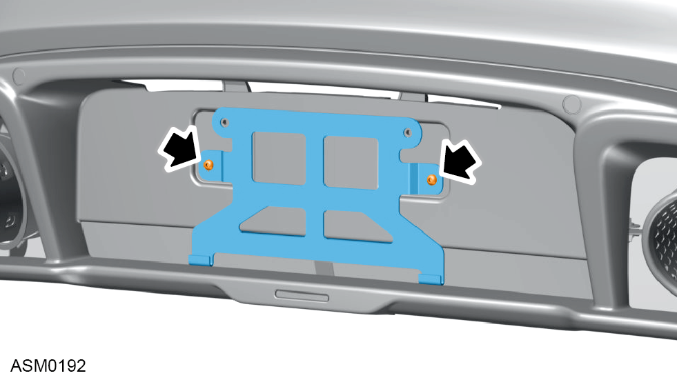

Bumper Lower - Rear
Print
Operation Code: 10.23.41-02
Removal
- Remove rear bumper. Refer to procedure.
- Disconnect rear bumper harness connectors (x8).
- Disengage harness clips (x5) from rear bumper lower and move harness aside.
- Remove M6x8 torx bolts (x2) securing licence plate to licence plate bracket and remove licence plate.

- Remove M6x20 bolts (x2) securing licence plate bracket to bumper. Torque 10 Nm.
- Remove licence plate bracket from rear bumper lower.
- Remove M6x20 bolts and washers (x4) securing bumper lower to bootbox. Torque 5 Nm.
- Release clip (x16) securing rear bumper lower to rear bumper.
- Remove rear bumper lower from rear bumper.
Do not carry out further disassembly if component is removed for access only.
- Remove 5x12 screws (x10) securing grille frame left side to rear bumper lower.
- Remove grille frame left side from rear bumper lower.
- Repeat steps 11 and 12 for right side side of bumper lower.
- Remove M5x12 screws (x8) securing centre grille frame to rear bumper lower.
- Remove centre grille frame from rear bumper lower.
- Remove M4x16 bolts (x2) securing rear fog lamp to rear bumper lower. Torque 2.25 Nm.
- Remove rear fog lamp from rear bumper lower.
- Release clips (x4) securing licence plate lamp mounting plate to rear bumper lower.
- Remove M5x12 screws (x2) securing licence plate lamp mounting plate to rear bumper lower.
- Remove licence plate lamp mounting plate from rear bumper lower.
- Release clips (x2) securing rear parking sensor to rear bumper.
- Remove rear parking sensor from rear bumper.
- Repeat steps 21 and 22 for remaining rear parking sensors (x3).
Installation
- Installation is the reverse of removal procedure except for the following:
- Check rear bumper gap and flush tolerances.